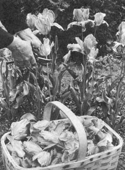

Tulips should be lifted carefully (so that the brittle stems do not snap off the bulb clusters) with a garden fork in June and stored through the summer. This produces vigorous bulbs for autumn sale.